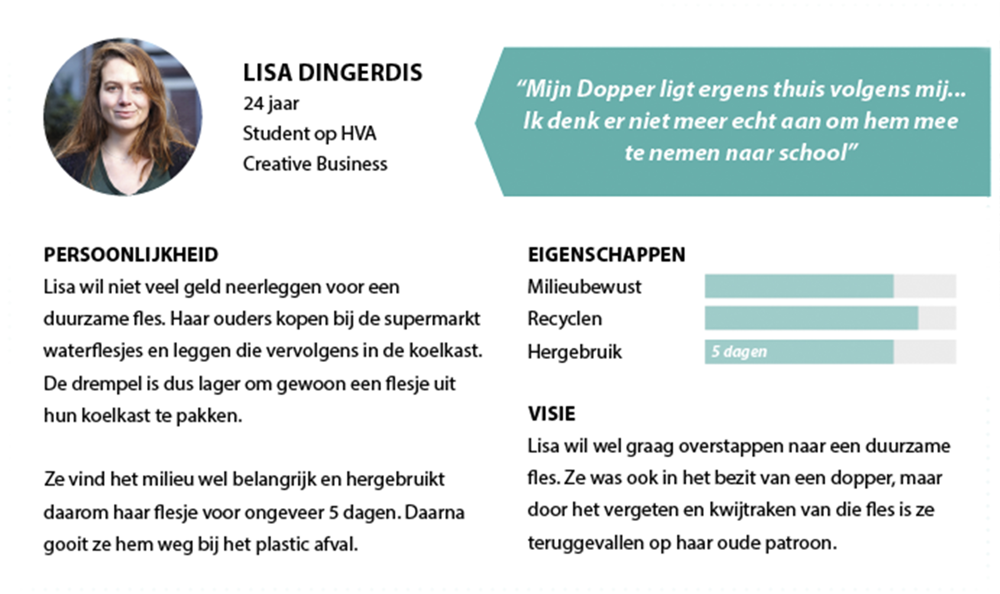
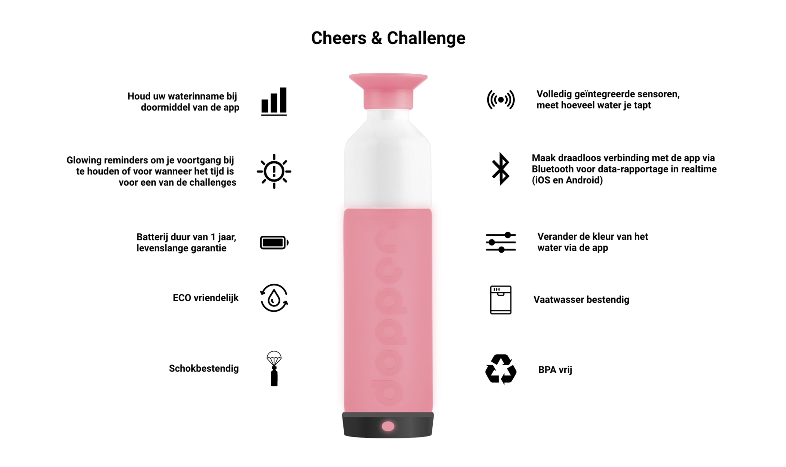

Begrijpen en kaderen
Beyond // Propedeuse Jaar
Situatie
Beyond is een opdracht uitgevoerd in blok 1 van het tweede jaar. De aanleiding was het petflessen probleem in de Wibautstraat in Amsterdam. The Knowledge Mile die daar gevestigd is, wil samen met de HvA een oplossing vinden waardoor er minder petflessen worden gebruikt. Dit project zijn we samen met een team van vier studenten aangegaan.

Taak
Onze taak was het onderzoeken van de doelgroep. Wie gebruikt er petflessen en wat was de stimulans van studenten die al overgestapt zijn op duurzame flessen. Twee teamleden gingen studenten interviewen op en rond de HvA campus en mijn taak was om te observeren bij tappunten. Het doel die wij als team wilden vervullen was door middel van een 'Internet of Things' installatie of device studenten aanmoedigen om een duurzame fles te gaan gebruiken. Na het vooronderzoek kwamen wij op de design challenge: Hoe kunnen wij studenten op de HvA met een duurzame fles door middel van een IoT -installatie motiveren om deze weer te gebruiken?
Activiteiten
Eerst zijn wij het probleem gaan onderzoeken. Wie gebruiken er petflessen en wie duurzame flessen? Wat is de reden dat mensen hun duurzame fles thuislaten terwijl ze er dus wel een bezitten? We hebben geobserveerd en interviews afgelegd. Daaruit hebben wij een persona gemaakt die onze doelgroep representeerd. Vanuit daar konden wij ideeën gaan genereren. De methodes die we daarvoor gebruikten waren brainstormen en ideation. Om onze ideeën te convergeren hebben wij de Morfologische kaart en MoSCoW toegepast. De Morfologische kaart is handig om toe te passen omdat je zo niet gelijk voor de eerste oplossing gaat, maar verder kijkt naar andere mogelijke oplossingen voor bepaalde functionaliteiten. Met de MoSCoW methode ga je goed kijken naar de zogehete must have's van de eindgebruiker. We hebben ook een customer journey gemaakt om te kijken of ons idee ook daadwerkelijk een verbetering is.
Resultaat
Onze oplossing bestond uit een universeel 'click-on' IoT-device en een app voor de student genaamd "Cheers & Challenge". Door middel van notificaties gaan we de student helpen bij het niet vergeten van hun duurzame fles in de ochtend waardoor zij geen pet-flessen overdag meer hoeven te kopen.Dit device bevat een aantal sensoren waardoor er gemeten kan worden hoeveel de student drinkt en zo kan de student ook bepaalde challenges krijgen wanneer hij of zij te weinig drinkt; namelijk doe een Atje! Door middel van gamification willen wij de studenten motiveren om hun fles regelmatig mee te nemen naar school. De opdrachtgever was erg tevreden en enthousiast over het concept. Helaas waren we niet aan toe gekomen om het prototype te bouwen. Dit vonden de beoordelaars erg jammer.
Reflectie
Dit project vind ik een goed voorbeeld voor deze competentie omdat we goed hebben gekeken naar de doelen en wensen van de gebruiker. Ook hebben we een duidelijk ontwerpprobleem in kaart gebracht; namelijk 'Hoe kunnen wij studenten op de HvA met een duurzame fles door middel van een IoT -installatie motiveren om deze weer te gebruiken?'. We hebben passende methodes gebruikt om tot een idee te komen en deze specifiek te maken. We waren niet tevreden met 1 interview, maar we zijn regelmatig teruggegaan naar de eindgebruikers om ons concept te bevestigen. De feedback daarvan hebben wij weer geïntegreerd in ons concept. Door het vele onderzoeken van het probleem kwamen wij later in het proces wel in de knoop met bijvoorbeeld het uitwerken van het fysieke prototype. Het samenwerken ging verassend goed. Mohammed, Tim, Jade en ik hebben het hele project samen gedaan en veel overlegd. Soms was er een discussie, maar daar gingen we erg volwassen mee om en kwamen altijd tot een oplossing.